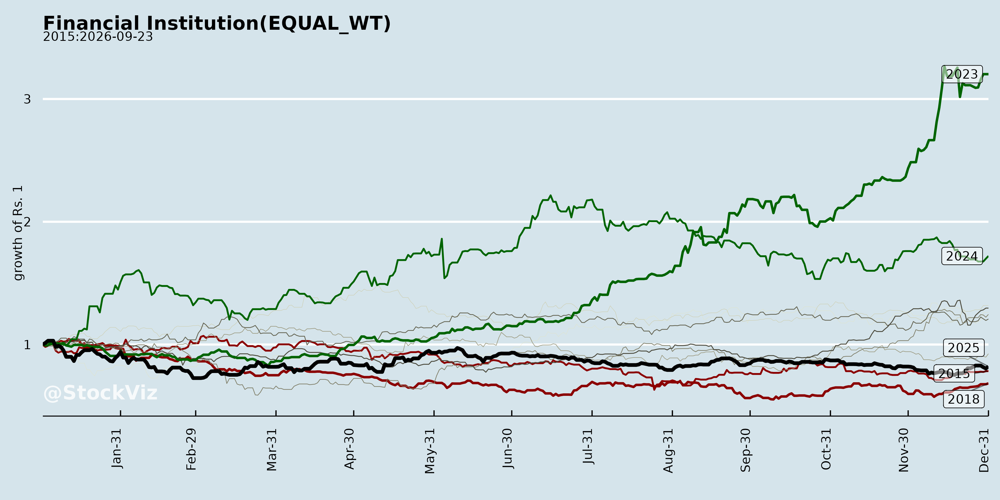
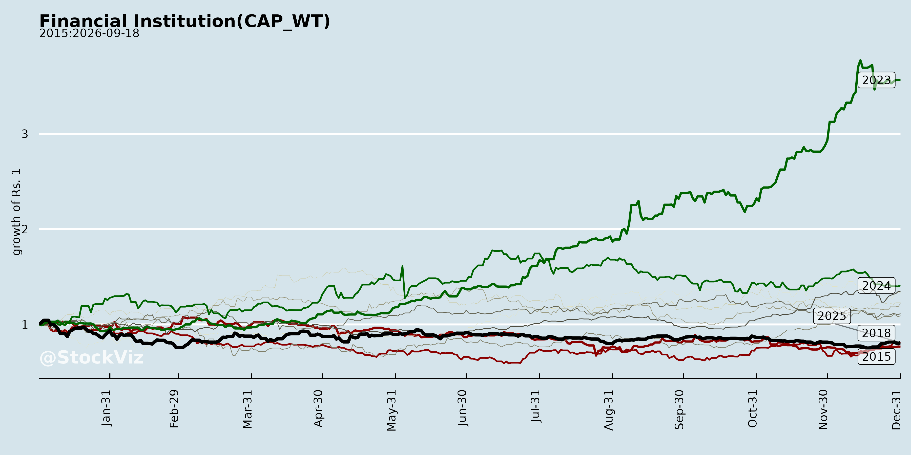
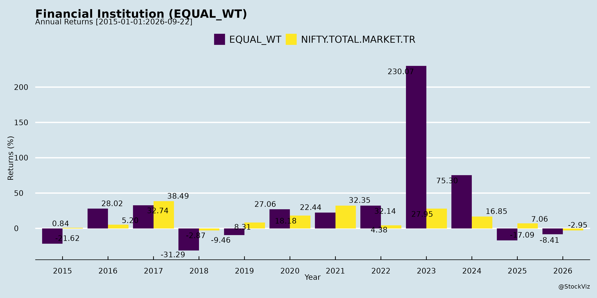
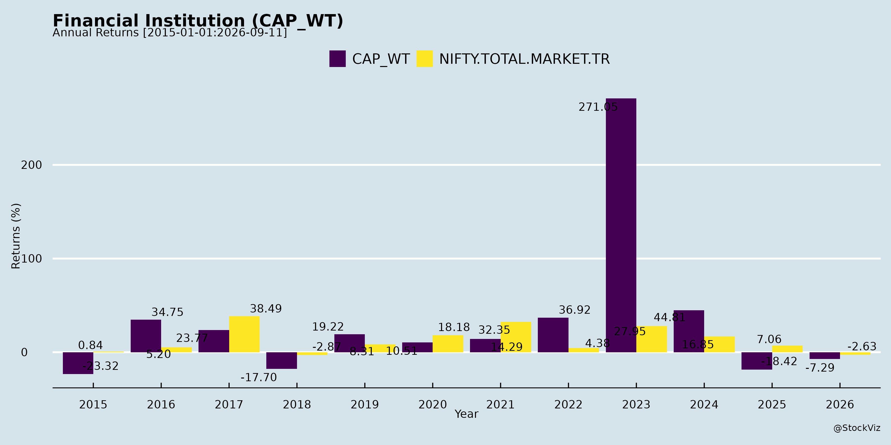
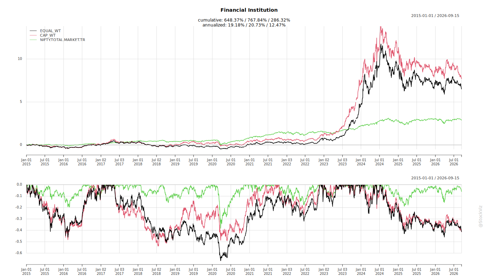
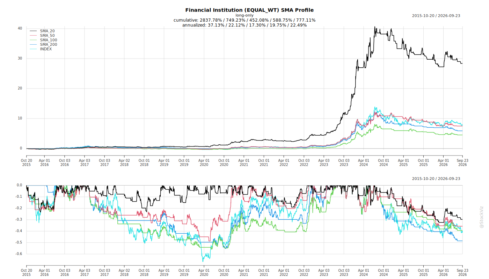
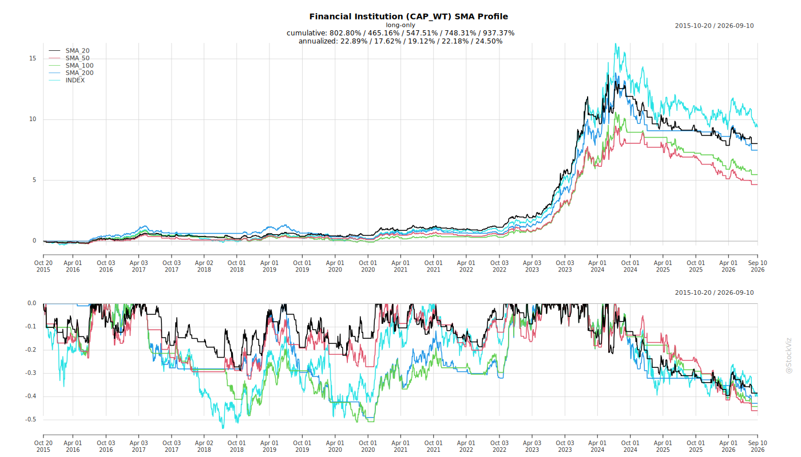
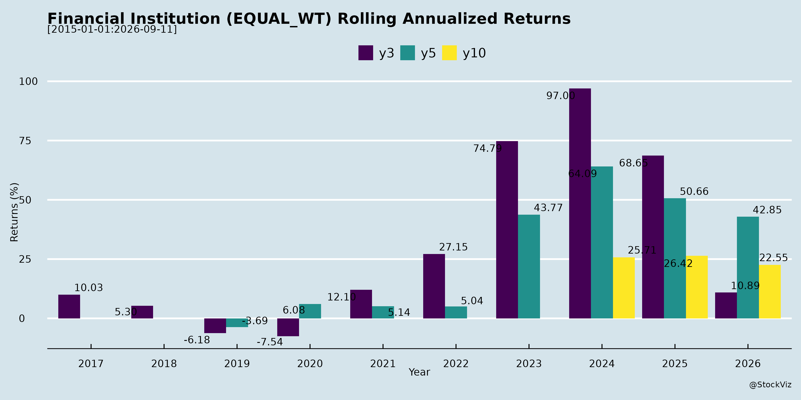
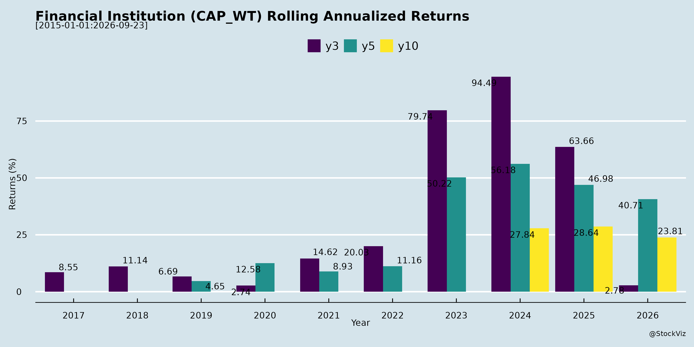

Annual Returns




Cumulative Returns and Drawdowns

SMA Scenarios


Current Distance from SMA
Rolling Returns


EBIT (% of Industry Total)
Revenue (% of Industry Total)
Analysis of Indian Financial Institutions (Infra NBFCs/CPSEs): IRFC, REC, HUDCO, PFC, IREDA
These documents cover Q2/H1 FY25-26 earnings transcripts (IRFC, REC, HUDCO) and disclosures (PFC, IREDA), representing key govt-backed financiers in rail (IRFC), power (PFC/REC), urban/housing (HUDCO), and renewables (IREDA). They exhibit strong alignment with India’s infra capex push (e.g., NIP, power transition, Viksit Bharat). Below is a structured analysis of tailwinds, headwinds, growth prospects, and key risks, followed by a summary.
Tailwinds (Positive Drivers)
- Robust Financial Performance: Record H1 profits (IRFC: ₹3,523 Cr, +double digits; REC: ₹8,877 Cr, +19%; HUDCO: Revenue +31%). NIMs/spreads improving (IRFC: 1.55%; REC: 3.64%; HUDCO: ~3% ex-govt loans). Cost of funds declining (HUDCO: 7.12% → 6.32%; REC: 7.17%).
- High Disbursements & Sanctions: REC: ₹1.15L Cr (+27%); HUDCO: ₹26k Cr (+19%); IRFC: ₹7k Cr disbursed, ₹45k Cr agreements. Strong pipelines (REC: ₹2.5L Cr committed; HUDCO: ₹3L Cr documented/non-doc).
- Pristine Asset Quality: Zero NPAs (IRFC); REC net NPA 0.24% (PCR 77%); HUDCO net NPA 0.07% (target zero in 15 months). 86-90% backed by govt/state guarantees.
- Govt Backing & Low Funding Costs: Maharatna/Navratna status; sovereign-aligned ratings (REC: Baa3/BBB). Diverse borrowings (bonds, ECBs, FCNR) at competitive rates; high CRAR (REC: 23.74%; HUDCO: 38%).
- Policy Support: Nodal roles in schemes (REC: RDSS, PM Surya Ghar; HUDCO: Urban Challenge Fund). Falling repo rates aiding margins.
Headwinds (Challenges)
- Prepayments Impacting Growth: REC: ₹49k Cr prepayments (e.g., Kaleshwaram ₹11.4k Cr reduced Stage-2 by 52%); offsets organic growth despite high sanctions.
- Forex Volatility: HUDCO: ₹176 Cr H1 loss on FCNR/ECBs (USD-CHF-INR swings); 99% hedged but ongoing costs (e.g., seagull options, EKI hikes).
- Margin Pressure: Competition from banks/NaBFID post-repo cuts; renewables lower yields (REC/HUDCO). Fixed borrowings slow transmission (REC: 80-85% fixed).
- Backloaded Disbursements: Sanctions strong but lag (HUDCO: 3-12 months; IRFC: Q3-Q4 heavy).
- Regulatory Overhead: RBI project finance norms (effective Oct’25) may raise provisioning; ECL reversals/recoveries volatile (HUDCO: ₹120 Cr reversal).
Growth Prospects
- Massive Market Opportunity: Power (REC: ₹46L Cr next 4-5 yrs, 500GW RE); Rail ecosystem (IRFC: upstream diversification); Urban infra (HUDCO: ₹80L Cr by 2036, ₹1L Cr Urban Challenge Fund). Targets: REC ₹10L Cr AUM by 2030 (30% RE); HUDCO ₹3L Cr by 2030 (+25-30% CAGR); IRFC 30k Cr FY26 disbursals.
- Diversification Momentum: IRFC (RE/transmission/ports); REC (infra/logistics/shipping MoU); HUDCO (private sector in ports/airports/roads; Urban Invest window). IREDA/PFC roadshows signal global investor interest.
- Volume-Led Expansion: Govt capex 70% of India’s total; low-risk “whole-of-govt” lending (CPSEs/states). Double-digit PAT/AUM growth guided (IRFC/REC).
- Shareholder Returns: High dividends (REC: ₹9.20/share H1; IRFC: ₹1.05 interim); equity self-funding growth (no dilution).
| IRFC |
₹30k Cr disbursal |
Steady upward AUM/PAT |
| REC |
11-12% loan growth |
₹10L Cr by 2030 |
| HUDCO |
₹50k Cr disbursal (+25%) |
₹1.6L Cr by Mar’26; ₹3L Cr by 2030 |
Key Risks
- Asset Quality Slippage: Diversification into uncharted areas (private sector, non-rail/power); pending resolutions (REC: 11 NCLT cases ₹6k Cr; HUDCO: ₹730 Cr principal in 10 projects). Stage-2 stress (REC: ₹16k Cr).
- Margin Compression: Rate cuts (25-50 bps expected); RE/private lending yields <9% (HUDCO/IRFC). Competition stiffens (banks at lower rates).
- Execution/Conversion Risk: Sanctions-to-disbursal delays; state fiscal health (e.g., DISCOM debt restructuring murmurs); PMAY slow uptake (HUDCO).
- External Shocks: Forex depreciation (USD-INR >90/100 triggers costs); cyclical capex dependency on govt budgets (rail/power ministries compete).
- Regulatory/Policy: RBI caps (30% net worth/single borrower); MAT revival (IRFC: mitigated 5-7 yrs); DISCOM privatization (REC: potential shift to private lenders).
Summary
These institutions are poised for sustained double-digit growth (AUM/PAT +25-30% FY26+), fueled by India’s ₹100L+ Cr infra capex (power/rail/urban/RE) and govt alignment. Tailwinds dominate (pipelines, low NPAs, falling costs), with diversification enhancing margins (2-3x railway yields). Growth is volume-driven, targeting ₹20L+ Cr cumulative AUM by 2030. However, headwinds like prepayments/forex temper near-term loan growth, while risks center on execution, competition, and quality in new segments. Overall bullish outlook (ROE 15-22%; dividends intact), but monitor forex/NPAs quarterly. Sector CRAR/debt-equity remains healthy (<7-8x), supporting self-funded expansion without dilution. Recommendation: Accumulate on dips for long-term infra play.
General
asof: 2025-11-30
Summary Analysis: Indian Financial Institutions (Infra/NBFC-CPSEs like IRFC, PFC, REC, HUDCO, IREDA, IFCI, TFCI)
These documents highlight key activities of government-backed Indian financial institutions (mostly Navratna CPSEs/NBFCs) focused on infrastructure financing (railways, power transmission, housing, urban infra, tourism, renewables). HUDCO’s H1FY26 investor presentation provides the most comprehensive financial insights, showing robust growth amid a booming infra capex cycle. Others reflect regulatory disclosures, SPV formations, and corporate actions. Below is an analysis of headwinds, tailwinds, growth prospects, and key risks.
Tailwinds (Positive Drivers)
- Strong Govt Alignment & Policy Support: Heavy reliance on national schemes (PMAY 2.0, AMRUT, JJM, Smart Cities, SBM 2.0) drives demand. HUDCO notes ₹15,150 Cr sanctions under JJM/AMRUT; PFC/REC forming SPVs for MoP-notified transmission projects (e.g., NERGS-III, WR-ER schemes). Infra capex projected to surge 1.6x to ₹90-100 lakh Cr (FY21-30), with HUDCO securing MoUs worth ₹5+ lakh Cr (e.g., ₹1.5L Cr with MMRDA, ₹1L Cr each with MP/Rajasthan).
- Superior Financial Metrics: HUDCO reports record H1FY26 performance – loan book ₹1.44L Cr (+30% YoY), sanctions ₹92,985 Cr (+22%), PAT ₹1,340 Cr (+8%), NIM 2.98-3.43%, CRAR 38%. Lowest industry NPAs (GNPA 1.21%, NNPA 0.07%, PCR 94.55%). Diversified low-cost borrowings (avg. 6.32-7.12%; ECBs at 5.73%, bonds).
- Asset Quality & Ratings: AAA domestic/sovereign ratings; ESG focus (₹15,000 Cr sustainable lending). Pan-India presence aids state partnerships.
- Corporate Actions for Liquidity: TFCI’s 1:5 stock split to boost retail participation; HUDCO’s market cap growth 5x since FY23.
Headwinds (Challenges)
- Regulatory/Compliance Pressures: IRFC fined ₹10.77L (incl. GST) by BSE/NSE for Q1FY26 governance lapses (Reg 17/18/19/20/21 non-compliance on board/committees). As govt cos, director appointments rest with ministries (MoR/MoP), leading to delays/waiver requests.
- High Leverage & Cost Pressures: HUDCO debt-equity 6.98x; rising finance costs (H1FY26: ₹4,302 Cr). Dependency on govt approvals slows agility.
- Event Cancellations: IREDA cancelled London investor meets due to “official exigencies,” signaling potential execution hiccups.
- NPA Legacy: HUDCO resolved ₹338 Cr NPAs in H1FY26 but holds ₹1,750 Cr gross NPAs (100% provisioned in key cases).
Growth Prospects
- Infra Boom & Viksit Bharat: $10Tn economy by 2030 needs massive funding (roads ₹28-33L Cr, railways/power ₹23-27L Cr). HUDCO repositioning: Urban Invest Window, Urban Challenge Fund (₹1L Cr corpus), credit enhancement for ULBs (AMRUT 2.0), private sector lending (real estate, roads, ports, energy).
- Project Pipeline: PFC/REC SPVs for TBCB transmission (to be transferred post-bidding). HUDCO’s 360° services (financing + consultancy) + PMAY 2.0 to boost affordable housing portfolio.
- Diversification: Entry into private infra (HUDCO guidelines approved); renewables (IREDA implicit); ECB/GMTN programs for cheap funds. Shareholder value via dividends (41.5% payout), 54EC bonds.
- Projections: HUDCO targets sustained 20-30% loan growth; sector capex tailwinds position these institutions as key enablers.
| Loan Book |
₹1.44L Cr |
+30% |
| Sanctions |
₹93K Cr |
+22% |
| Disbursements |
₹26K Cr |
Record |
| PAT |
₹1.34K Cr |
+8% |
Key Risks
- Regulatory/Governance: Fines/waivers (IRFC precedent); dependency on govt for board reconstitution/delays in approvals.
- Asset Quality Deterioration: Infra project delays (land/forest clearances) could spike NPAs; consortium NPAs ₹1,157 Cr (HUDCO).
- Interest Rate & Liquidity: Rising rates erode spreads (HUDCO: 2.08%); forex risks in ECBs (¥174 Bn exposure).
- Execution/Policy Shifts: SPV transfers post-bidding (PFC/REC) vulnerable to bidder failures; EGM delays (IFCI).
- Market/Competition: Private NBFCs entering infra; over-reliance on govt schemes (75% HUDCO portfolio govt-backed).
- Macro: Slowdown in capex, elections, or global events impacting ratings/funding.
Overall Outlook: Strongly Positive with tailwinds from govt capex dominating. These institutions are well-positioned for 20-30% AUM growth, backed by AAA ratings/low NPAs. Mitigate risks via diversification (private sector, ESG) and compliance. HUDCO exemplifies sector strength; monitor IRFC-like governance issues.
Investor
asof: 2025-11-30
Analysis of Indian Infrastructure NBFCs/CPSEs (IRFC, PFC, REC, HUDCO, IREDA)
These government-backed financiers (all Navratna/Maharatna CPSEs) dominate infra lending in railways, power, housing, urban dev, and renewables. Drawing from Q2/H1 FY26 earnings transcripts and announcements (as of Oct-Nov 2025), here’s a structured analysis of headwinds, tailwinds, growth prospects, and key risks. Data reflects strong H1 performance amid India’s infra boom (e.g., NIP, 500GW RE target by 2030).
Tailwinds (Positive Drivers)
- Govt-Backed Stability & Low-Cost Funding: Sovereign linkages ensure AAA ratings, low NPAs (IRFC: 0%; REC: NNPA 0.24%; IREDA: 1.97%), and cheap capital (HUDCO CoF 6.32%; IREDA 3.65% annualized). Equity infusions/QIPs (IREDA ₹2k Cr QIP; REC/PFC dividends ₹9.2/share) bolster CRAR (20-38%).
- Infra Capex Surge: 70% of India’s capex from govt (IRFC). RE potential ₹31-46L Cr (IREDA/REC); urban infra ₹80L Cr by 2036 (HUDCO). H1 sanctions/disburse: IRFC ₹45k Cr (+9x YoY), REC ₹1.15L Cr (+27%), HUDCO ₹93k Cr (+22%).
- Diversification Success: IRFC (rail ecosystem: RE/transmission/coal); REC/PFC (infra/logistics/shipping); HUDCO (private ports/airports/roads); IREDA (BESS/Green H2). NIM expansion: IRFC 1.55%, REC 3.64%, HUDCO 3%.
- Operational Efficiency: Digitization (IREDA/HUDCO), low overheads, experienced teams (avg 25+ yrs exp). Recoveries (REC ₹11.4k Cr from Kaleshwaram; HUDCO ₹339 Cr).
Headwinds (Challenges)
- Margin Pressure: Repo cuts increase bank competition; RE yields may dip (REC/PFC). Prepayments erode AUM (REC ₹49k Cr H1; IRFC reversing downtrend).
- Forex Volatility: ECB hedging costs up (HUDCO ₹176 Cr loss; IREDA 75% hedged but FX exposure ~₹10k Cr). Rupee depreciation hits (HUDCO: USD/CHF protections to 89-90).
- Regulatory/Provisioning Norms: RBI project finance rules (REC: minimal FY26 impact); potential DISCOM restructuring (REC).
- Slow Legacy Resolutions: NPAs in NCLT (REC 10/11 assets; IREDA slippage 0.96%). MAT risk (IRFC: deferred 5-7 yrs).
Growth Prospects
- High Visibility Pipeline: IRFC ₹30k Cr FY26 disburse (on track); REC 11-12% AUM growth, ₹10L Cr by 2030 (30% RE); HUDCO 25-30% AUM CAGR to ₹3L Cr by 2030; IREDA 27% GLP CAGR (₹84k Cr H1, +31% YoY); PFC/REC H1 disburse ₹1.15L Cr (+27%).
- Sector Tailwinds: RE (IREDA sanctions ₹33k Cr H1); railways upstream (IRFC ₹45k Cr); urban (HUDCO Urban Challenge Fund ₹1L Cr); power infra (PFC/REC ₹46L Cr over 5 yrs).
- CAGR Potential: 20-30% AUM growth (govt capex, diversification). ROE 15-22%; dividends rising (IRFC ₹1.05/share interim record).
- 2030 Targets: REC ₹10L Cr AUM; IREDA GLP scaling via GIFT City/perpetual bonds.
Key Risks
| Asset Quality |
Diversification into uncharted areas (e.g., IRFC non-rail; HUDCO private); Stage-2 NPAs (REC ₹16k Cr). Slippage risk in state utilities. |
70-84% secured/commissd assets; zero NPA history (IRFC); PCR 45-77%; stressed asset teams. |
| Interest Rate/FX |
Margin compression (repo cuts); ECB volatility (₹10-15k Cr exposure across entities). |
60% fixed-rate borrowings; hedging (IREDA 75% FCY); low gearing (5-7x). |
| Regulatory/Policy |
RBI norms, DISCOM debt restructure, MAT revival (IRFC). Budget dependency. |
Govt nodal agency status; whole-of-govt approach. |
| Execution |
Delays in COD/milestones; competition from banks/NaBFID. |
Tech-enabled monitoring; experienced mgmt; strong pipelines (₹2.5-8L Cr MOUs). |
| Macro |
Fiscal slippages in states; cyclical capex slowdown. |
86% state sector (REC); RE policy push. |
Overall Summary:
Bullish Outlook with robust tailwinds from govt infra push (RE/urban/rail) driving 20-30% AUM CAGR. H1 FY26 showcases record sanctions/disburse (avg +30-80% YoY), NIM gains, and pristine balance sheets. Growth anchored in ₹30-80L Cr sector opps to 2030. Headwinds manageable (competition, FX) via diversification/low CoF. Key Risks low (asset quality via govt ecosystem; contained NPAs <2%). Recommendation: High conviction; monitor RE execution/FX. Peers like REC/IREDA lead RE; IRFC/HUDCO infra plays. Valuations attractive on 15-22% ROE trajectory.
Press Release
asof: 2025-11-30
Analysis of IRFC and IREDA as Indian Financial Institutions (Infrastructure NBFCs)
Tailwinds (Positive Factors)
- Robust Financial Performance: IRFC reported record H1 FY26 PAT of ₹3,523 Cr (+10.45% YoY), Q2 PAT of ₹1,777 Cr (+10.19%), total income of ₹13,290 Cr, AUM at ₹4.62 lakh Cr, highest-ever Net Worth (₹56,194 Cr) and EPS (₹5.39 annualized). Improved NIM at 1.55% driven by diversification.
- Strategic Diversification: IRFC sanctioned/executed ₹45,382 Cr in new deals (9x prior FY), in high-growth sectors like renewables, power, transmission, mining, and infra—boosting margins despite no new Railway business.
- Credit Rating Upgrade (IREDA): S&P upgraded to BBB/Stable (from BBB-) and A-2 short-term, aligning with India’s sovereign rating. Cited strong asset quality, capitalization, and liquidity—lowers funding costs and enhances market access.
- Shareholder Returns & Governance: IRFC declared highest interim dividend (₹1.5/share). Both approved strong policies (e.g., IRFC’s advocacy, stakeholder engagement, insider trading code; IREDA’s green financing mandate).
- Govt Backing & Sector Alignment: Navratna CPSEs under Ministries (Railways/Renewables), zero NPA (IRFC), supporting India’s infra/renewable push.
Headwinds (Challenges)
- Limited Traditional Pipeline: IRFC notes absence of new Indian Railways business and no prior pipeline, forcing reliance on proactive diversification—vulnerable if new sectors underperform.
- Margin Pressure Potential: NIM improvement is nascent (1.55%); rising interest rates or funding costs could erode gains.
- Execution Risks in Diversification: Scaling non-core sectors (e.g., coal mining amid green shift) may face delays or lower-than-expected spreads.
- Macro Environment: Implicit dependency on infra capex cycles; no explicit mention, but global volatility could impact ratings/funding.
Growth Prospects
- High Upside from Diversification: IRFC’s new portfolio maturation to sustain NIM expansion, double-digit PAT growth, and AUM acceleration in H2 FY26. IREDA’s rating upgrade enables cheaper/deeper funding for renewables (core to India’s net-zero goals).
- Sector Tailwinds: Aligned with govt priorities—rail infra (IRFC), RE transition (IREDA). IRFC targets further AUM growth via competitive spreads; IREDA strengthens as “premier green financier.”
- Capital Market Strength: Enhanced ratings/investor confidence to support equity/debt raises; sustained dividends signal stability.
- Outlook: Both poised for 10-15%+ PAT CAGR, with IRFC emphasizing “upward trajectory” and IREDA leveraging sovereign parity for market leadership.
Key Risks
- Asset Quality Deterioration: Despite zero NPA/robust quality, exposure to cyclical infra/RE sectors risks delays/defaults (e.g., project execution).
- Funding & Liquidity: IREDA upgrade mitigates, but IRFC’s liability management faces rate volatility; over-reliance on govt-linked funding.
- Regulatory/Policy Shifts: SEBI LODR compliance, policy changes (e.g., CRAR SOP), or shifts in RE subsidies/rail capex.
- Concentration Risk: IRFC’s pivot from Railways; IREDA’s RE focus vulnerable to tech/policy changes (e.g., import duties).
- Operational: Dividend TDS deadlines, stakeholder grievances; broader market (e.g., equity volatility post-results).
Summary: IRFC and IREDA exhibit strong tailwinds from diversification, record profits, rating upgrades, and govt alignment, driving superior growth prospects in India’s infra/RE boom. Headwinds are moderate (pipeline gaps, execution), with manageable risks centered on asset quality and macros. Overall positive outlook—recommend monitoring NIM trajectory and sector disbursements for sustained momentum.
Copyright © 2023 SAS Data Analytics Pvt. Ltd. All rights reserved.
🐞